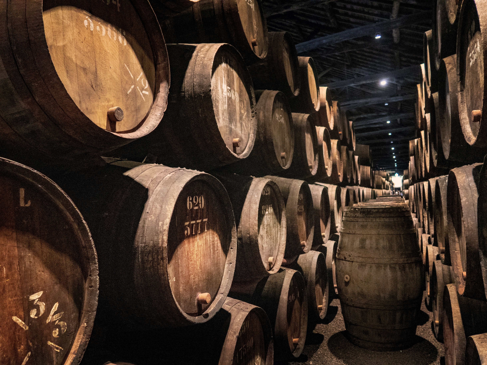
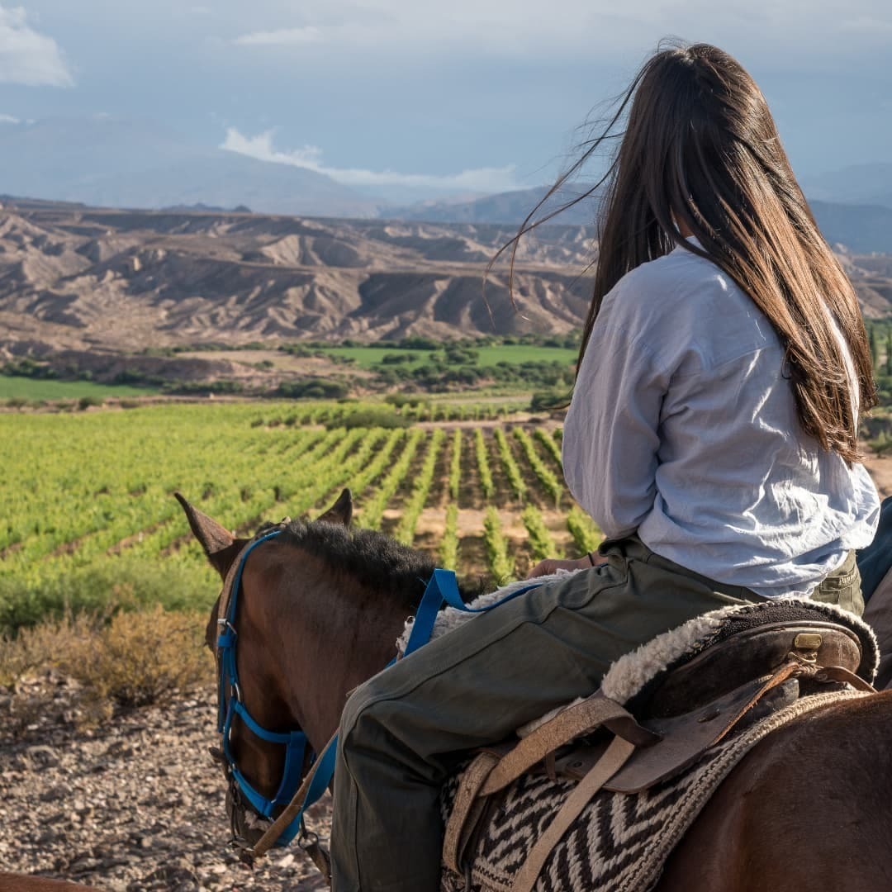
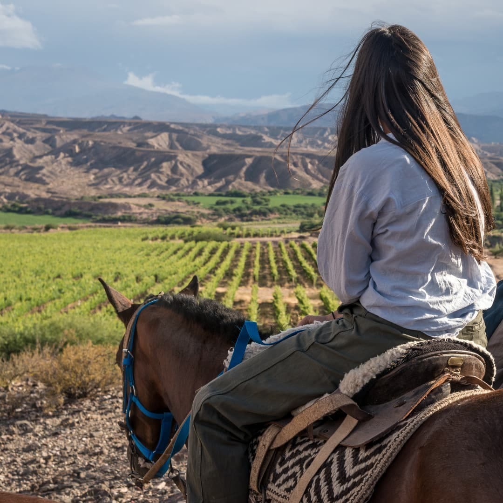
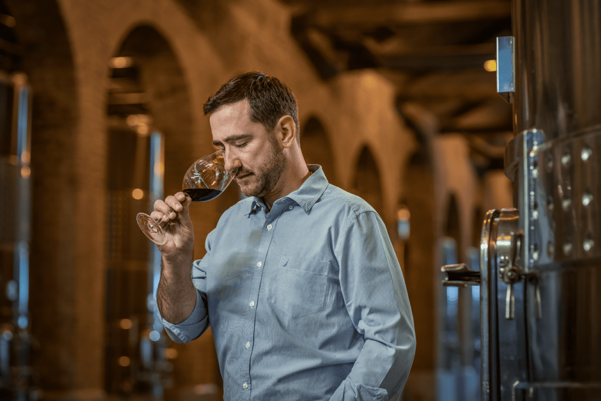
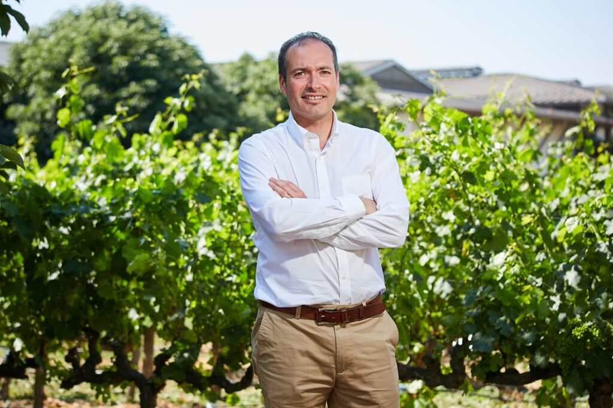

NUESTRA HISTORIA
La identidad de nuestra bodega está arraigada en profundos valores familiares y en un genuino compromiso con la calidad. Controlamos todo el proceso de producción, desde el campo hasta la botella, y dejamos que cada paso sea guiado por nuestro corazón y oficio.
Cada gota de nuestro vino está imbuida de una rica herencia de destilación y una tradición de elaboración de que ha pasado de generación en generación, para crear el sabor suave único que nos ha convertido en uno de los vinos súper premium favoritos y más premiados del mundo.
Con presencia en más de 50 países,la bodega familiar el tano se ha consolidado en estos 60 años como una de las principales bodegas productoras de vinos de calidad, compitiendo en un mercado global mediante la identidad de sus productos, el respeto al medio ambiente y su responsabilidad social.
En el 2015 la quinta generación de la familia tuvo como objetivos increemntar las exportaciones y velar por la buena marcha de la Bodega

 

FILOSOFIA
Basados en el comercio justo, la agricultura orgánica y la innovación, la bodega El Tano mantiene dentro de sus pilares, estos conceptos que han marcado la historia y su cadena productiva.
Nuestra bodegas desde siempre ha trabajado en la recuperación de variedades tradicionales Argentinas, casi olvidadas como la cepa país, carignan y moscatel, con proveedores pequeños de sectores del secano. Cordillera Carignan, Estelado Rosé, Reserva de Pueblo y Días de Verano son parte de los productos asociados a este tipo de proyecto.
NUESTRO EQUIPO
Nuestro equipo es parte de nuestra identidad y es nuestra familia. Ponemos a las personas primero en todo lo que hacemos y nos esforzamos por crear una comunidad Diplomática en todo el mundo que refleje nuestros valores y compromisos.

Enólogo
Andres Vertel, apasionado por la sustentabilidad y los viñedos orgánicos. Que ha dedicado toda su vida a descifrar los secretos de hacer grandes vinos para producir vinos auténticos

Director/Winery & Vinayards
Jesus Angarita, mendocino, con más de 10 años de experiencia en la gestión de exportación de vino. Actualmente, responsable de Bodega y Viñedo.

Ingeniero Agrónomo
Manuel Alvarez, agrónomo con una vasto conocimiento en viñedos y una capacidad única para el análisis y el perfecto manejo de la producción de uvas